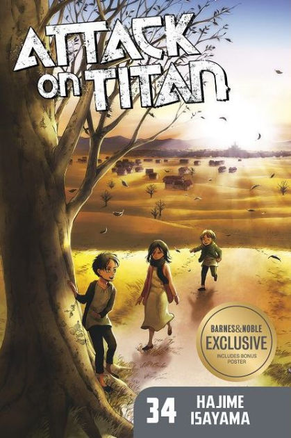
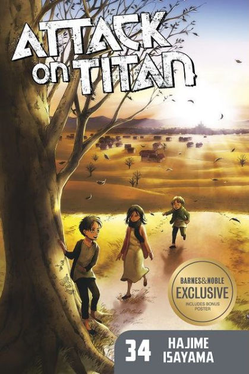
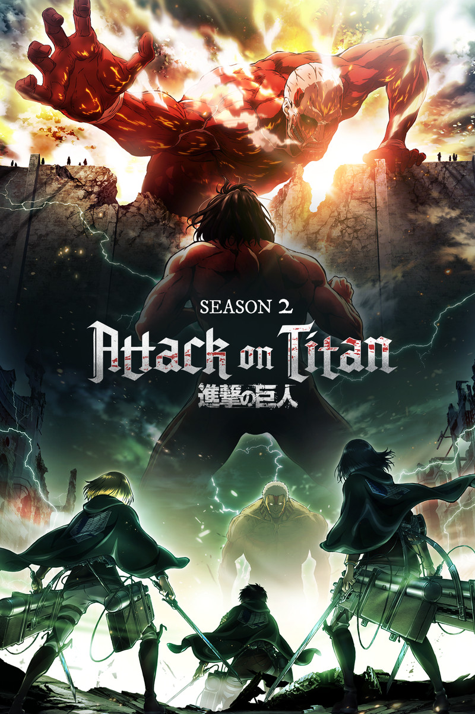
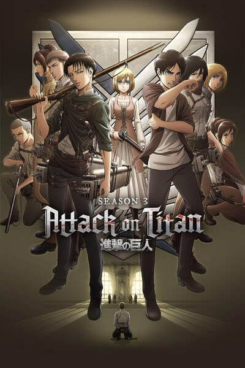
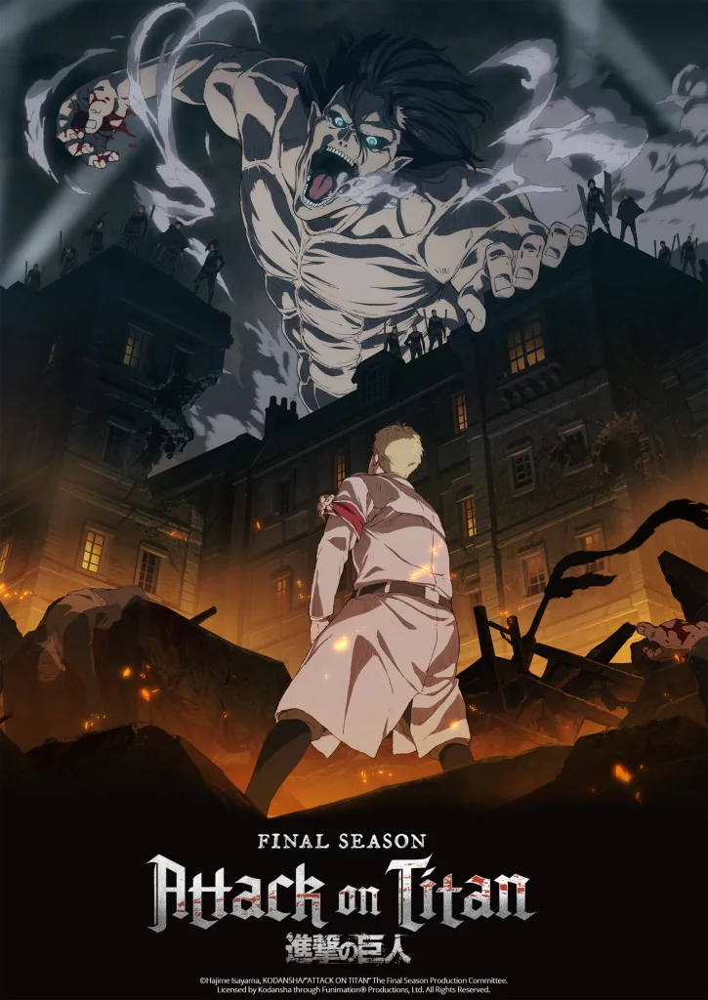
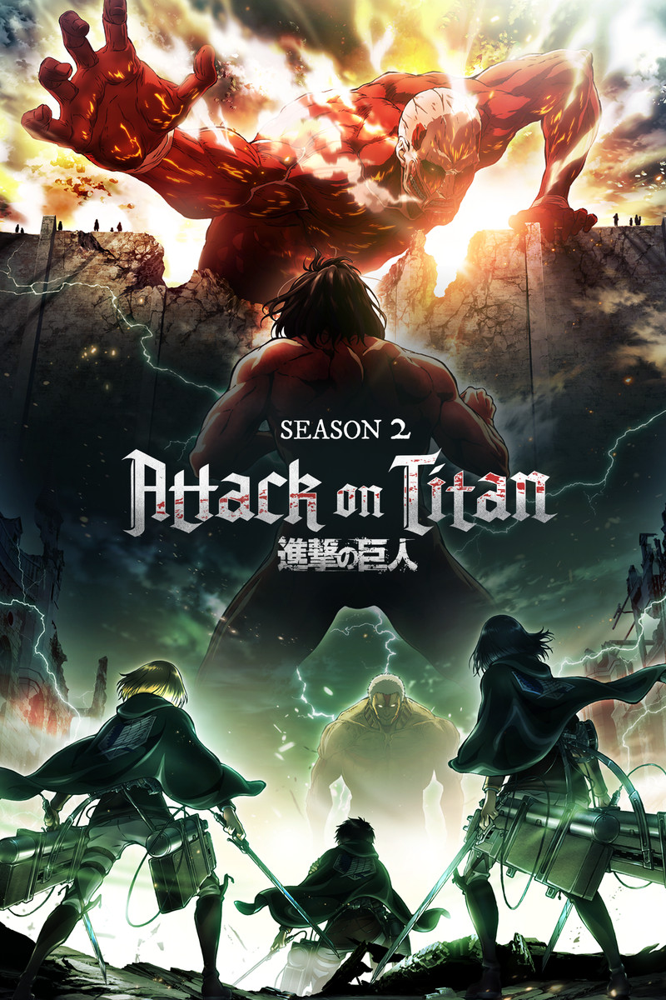
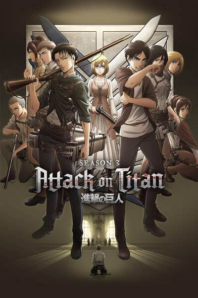
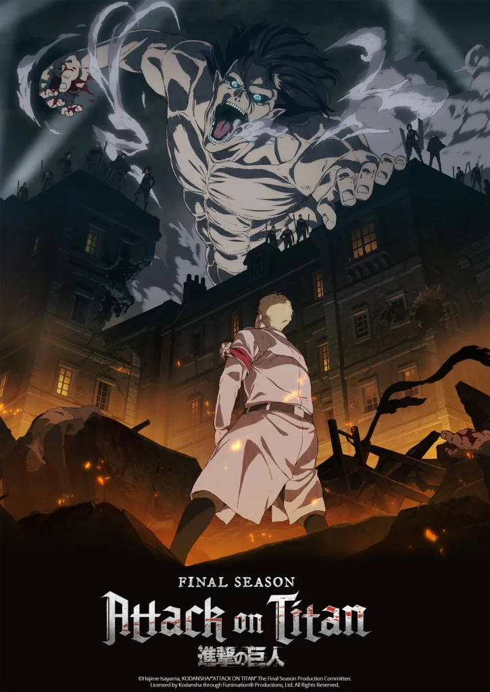

Atack on titan je japanska manga koju je napisao i ilustrovao Hadzime Isajama. Glavni lik je Eren Jeager.
Individualna poglavlja objavljivala su se od septembra 2009. godine,a manga je
zavrsena nakon 11 godina objavljivanjem poslednjeg 139. poglavlja Aprila 9. 2021. godine.
 

Manga je adaptirana u anime seriju od četiri sezone. Prve tri sezone animirao je studio Wit.
Četvrtu sezonu animirao je umesto Wit-a studio MAPPA. Anime jos uvek nije zavrsen,prvi deo četvrte sezone
emitovao se od 7. decembra 2020. do 29. marta 2021. godine; drugi deo od 9. januara 2022. do 3. aprila 2022.,
a treći i poslednji deo je najavljen za 2023. godinu.
 




